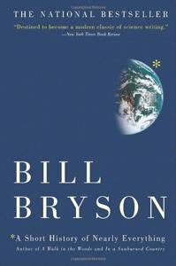
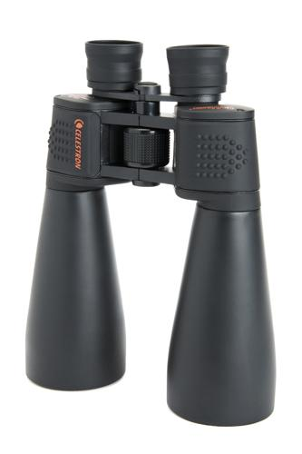
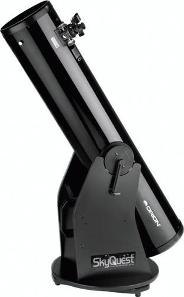

Before we begin! ...watch this video.
It's only 3 1/2 minutes long and it'll really get you into the telescope mood.
What's a decent starter telescope?
I always say that everyone's first scope should be binoculars and a good astronomy book. And I know no one wants to hear that, but what people sometimes don't think about is that what you're going to see from your backyard or even at an actual observatory is NOT what you see in magazines. Things are so far away and so faint that there's virtually no color and most things you'll see appear simply as a 'smudge' on the eyepiece. Backyard astronomy is 90% imagination and 10% what you actually see.

I always recommend a good astronomy book like Carl Sagan's "Cosmos," Chet Raymo's "The Soul of the Night," or on the more practical side, "Nightwatch" by Terence Dickinson, because it is very important to know what it is you’re looking at. (My personal favorite is "A Short History of Nearly Everything" by Bill Bryson. While the book's main focus is 'all-things-science,' it begins by focusing mainly on astronomy. LOVE that book.) "Sky & Telescope" and "Astronomy" are great magazines to check out and will usually have interesting articles, cool pictures, and star charts and recommendations on what you can see that month.
In addition, there are countless websites, podcasts, and YouTube videos aimed at professionals and amateurs alike that will have anything and everything you've ever wanted to know about astronomy – and things you didn’t even know you wanted to know. NASA's website is HUGE and has all kinds of info. There are numerous subreddits (Reddit.com/r/Astronomy for example) for anything astronomy. CloudyNights is a wonderful forum to help you get started, full of people willing to help. The 'AstronomyCast' podcast is one of my favorite podcasts of all time and has hundreds of awesome and informative episodes – I cannot recommend AstronomyCast enough.
By having an understanding and a grasp of what you're looking at, you can turn that 'smudge' on the eyepiece into a stellar nursery tens of light years across where stars are born and swirling solar systems are created before your very eyes!

A cheap/decent scope will run you about $300 at the VERY least, and a 'Walmart scope' is actually worse than no scope at all. (DON'T buy one of those! They're more hassle than what they're worth and will only disappoint you and turn you off immediately.) What people tend to forget is that being able to even use your telescope depends very heavily on the weather. Here in Ohio, we have a lot of cold, cloudy, rainy – just plain bad weather – days. So if you've finally decided to spend a few hundred bucks on a scope, you may not get to use it as much as you might like. That's why I recommend some nice binoculars because even if you decide you aren't as interested in astronomy as you may have thought you were, you are only down $50-$100 and you can use binoculars for other things like kids' sporting events, hiking, etc. Plus, there’s a TON of stuff you can see with just your unaided eye or binoculars alone like Jupiter's moons, Saturn's rings, the Orion Nebula, the Milky Way galaxy, double star systems, formations on the Moon – you can even make out the Andromeda galaxy at over 2 million light years away!
Whenever there's a big meteor shower coming up, people will hear about it on their local news station and ask me if I'm going to watch it and if I'm going to get my telescope out. But getting my telescope out is the last thing I want to do! The only thing you need for a meteor shower is a lawn chair, a dark sky, and cold beer! You wouldn't be able to see anything through a telescope. I know it sounds like I'm trying my hardest to deter you from buying a telescope but trust me, I want you to get a telescope probably more than you do! I just want you to have a little bit of understanding before you make that big purchase, don't see what you thought you were going to see and lose interest and feel like you’ve been ripped-off, then lose all interest in astronomy altogether.

So if you STILL want to get one after all that ;) my go-to beginner telescope recommendation would be a 6" or 8" dobsonian. These are reflecting telescopes (look that up) that aren't computer controlled but rather mounted on a simple Lazy Susan-type mount where the operator sees something interesting in the sky then simply swings the scope around manually and lines it up with the object in the sky and takes a look!
These are good for a number of reasons: One, they're probably the most affordable telescope style of them all. Two, computer controlled mounts can be very expensive and a pain to set up and use. Dobsonians are no-brainers to operate so you can spend more time enjoying your observing session rather than fighting with the equipment. Three, you'll actually have to learn the sky. With a computer controlled mount, you push a button and the scope swings around to, what is essentially to you, a random spot in the sky and you have no idea where or why it's pointing that way. Doing it manually will make you more familiar with the objects in the sky and ultimately our place within it. Four, dobsonians are also affectionately referred to as 'light-buckets' since they have a relatively large aperture and collect a ton of light. This means you can see things that are very dim and very far away. Once you understand the concepts of telescopes and the differences in mounts, and have a general idea of what you can see in the sky and what you WANT to see, then you can move on to bigger (more expensive!) equipment.
The last thing I want to mention is that many other 'HOW-TOs' on beginning with amateur astronomy will tell you to join a local astronomy club and talk to other amateur astronomers and use their equipment and find out what would work best for you – simply learn as much from these folks as possible (as they're widely regarded as some of the nicest people on the planet). So do a little research and try and find an astronomy club in your area and attend a meeting or two... you'll learn so much more from a face-to-face conversation than you ever could just browsing the internet.
I hope this helps. Have fun and clear skies!
Oh, and I almost forgot – keep a journal! Record the most mundane things, i.e. temperature, time, what you saw even though you don't know what it was, etc. No matter how corny that sounds, do it. You'll thank me later...
:: Additional Posts ::
Here are a few additional posts of mine where I describe how backyard astronomy has inspired me personally: